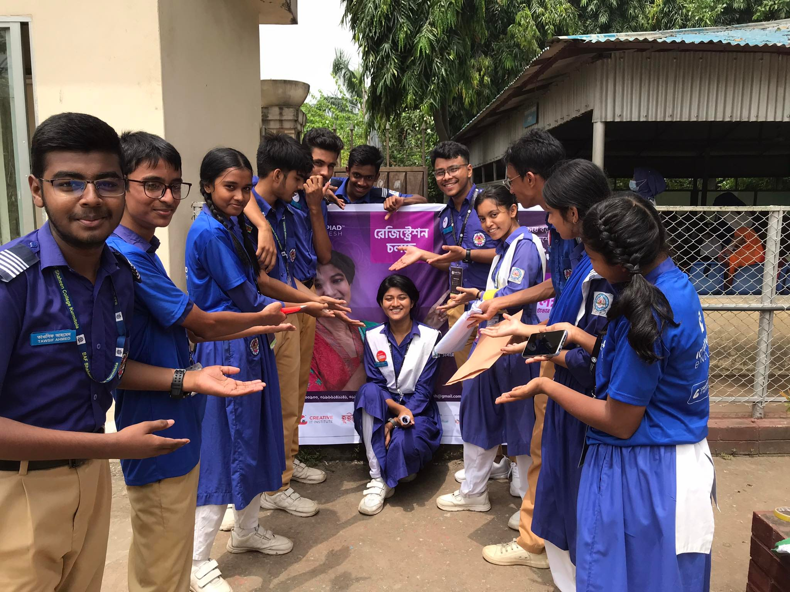
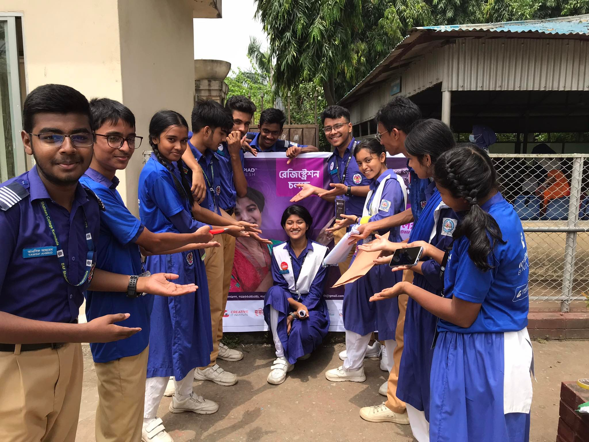

üöÄ On the Move - ICTOB Season 2 (2024‚Äì2025)
Launched at the end of 2024, ICT Olympiad Bangladesh (ICTOB) Season 2 is currently in full swing, drawing passionate tech enthusiasts from all across the country into a thrilling competition of knowledge and innovation.
During the initial stages, our very own Iconic IT Club BAFSK once again stepped up to lead the charge by hosting and managing the entire participant registration process within our campus.
Thanks to the dedication and coordination of the club, our campus recorded an exceptional number of participants, continuing the legacy of active involvement in national-level ICT competitions.
With the registration phase completed, the competition has now entered the examination rounds — leading all the way to the prestigious Gala Round, where the best of the best will rise to the top.
This journey reflects our continued commitment to fostering digital excellence and empowering the tech leaders of tomorrow.

 
